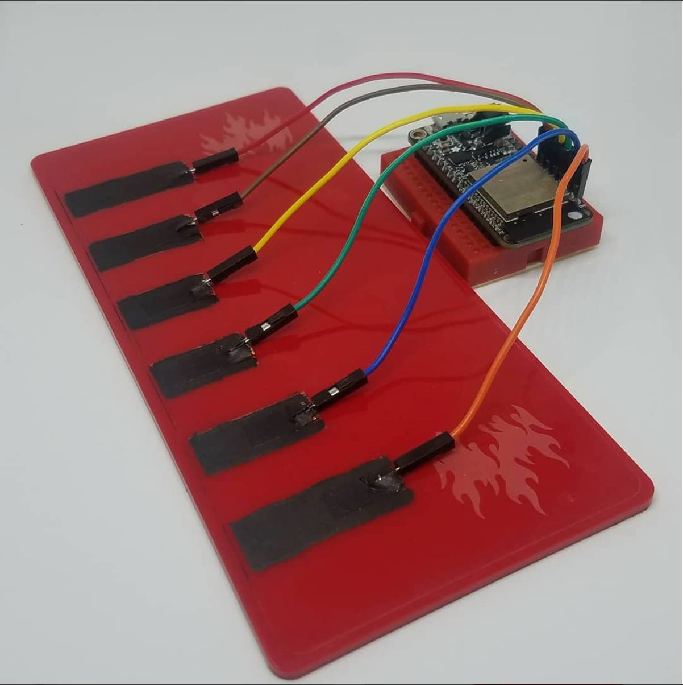
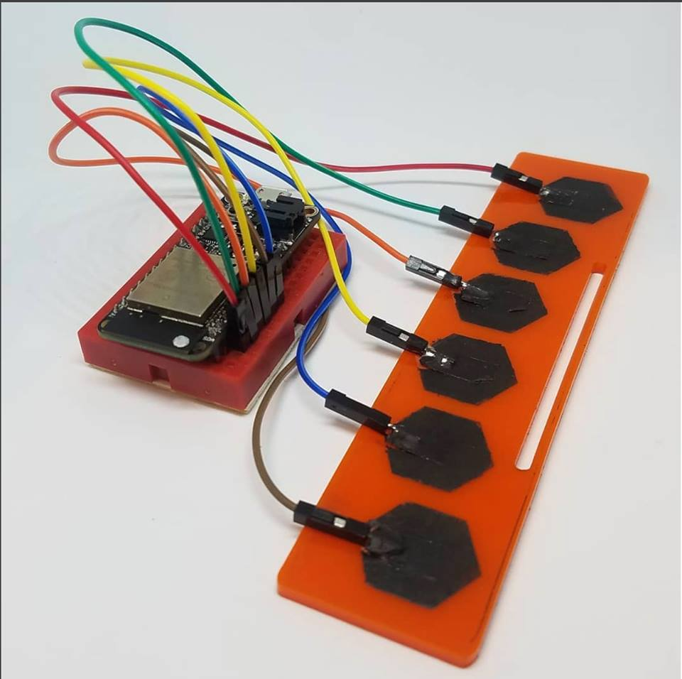
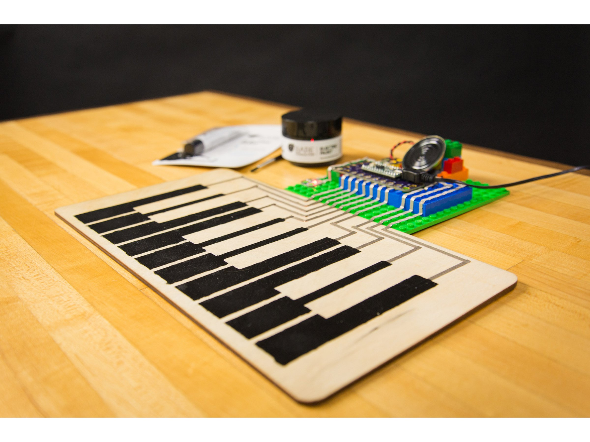
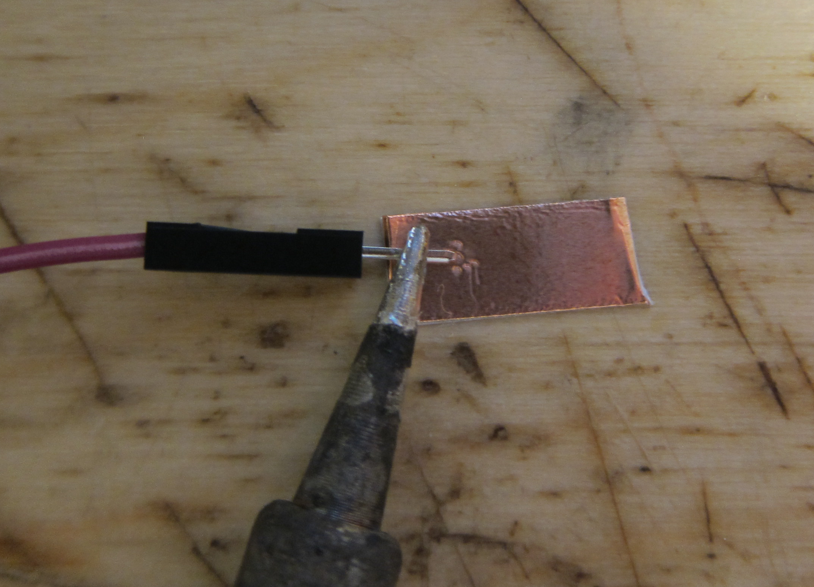
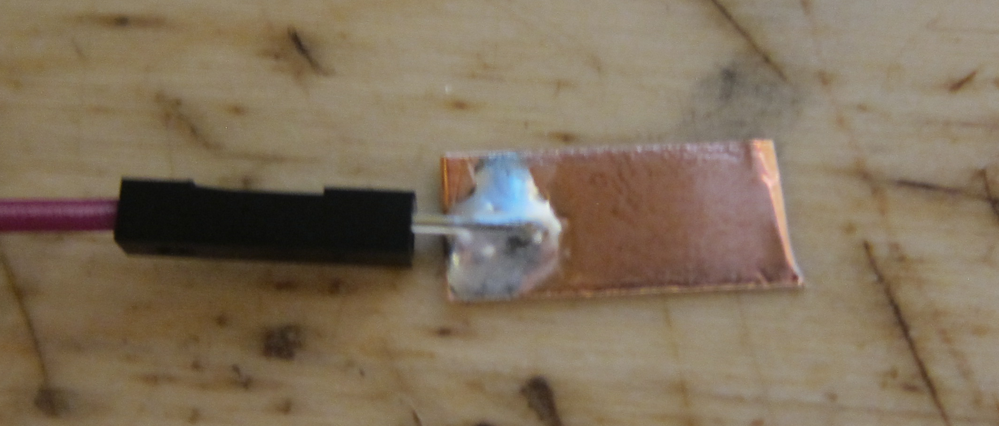
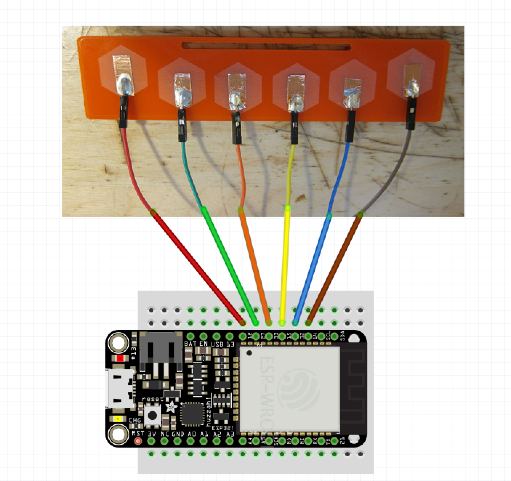
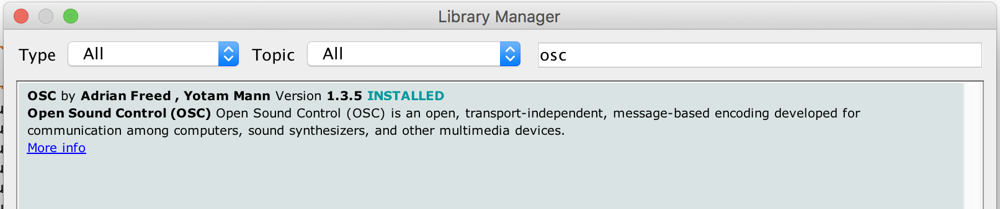
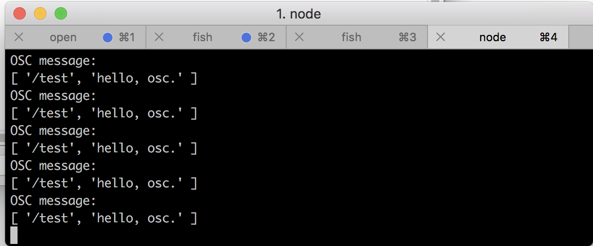
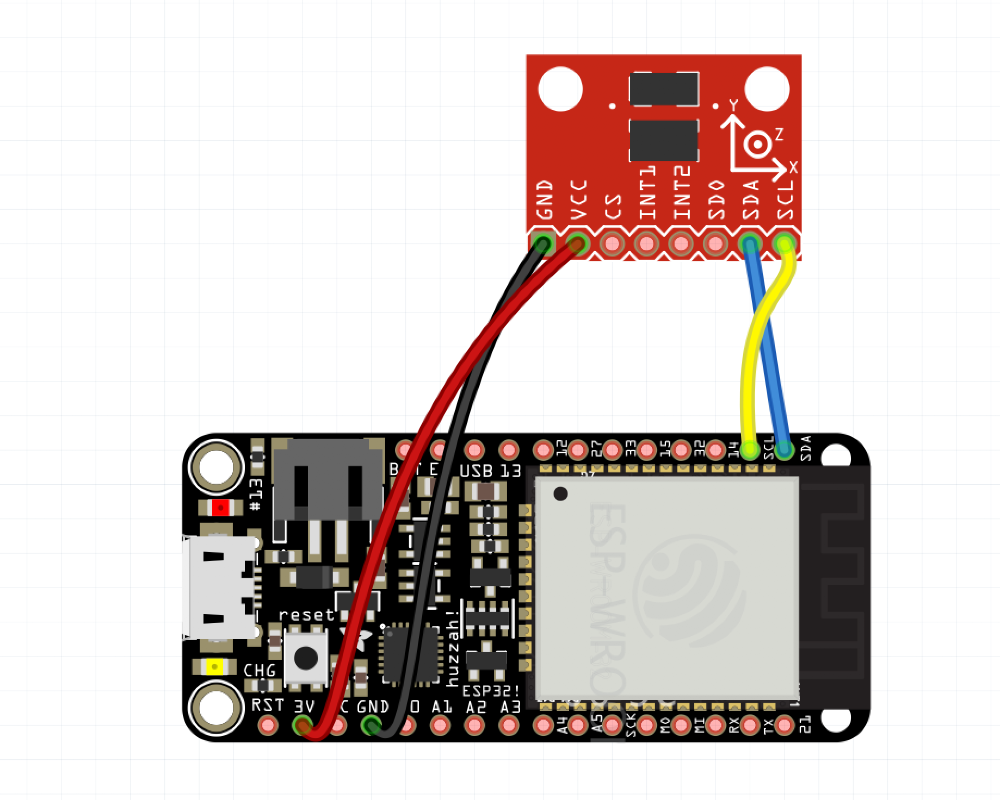

Interactive Physical Systems: Week 8
Interactive Physical Systems: Week 8
Interactive Physical Systems: Week 8
Interactive Physical Systems: Week 8
- Introduction to Johnny Five
- Liquid Crystal Display with J5
- Introduction to the ESP32
Topics for Today:
Johnny-Five is the original JavaScript Robotics programming framework. Released by Bocoup in 2012, Johnny-Five is maintained by a community of passionate software developers and hardware engineers. Over 75 developers have made contributions towards building a robust, extensible and composable ecosystem.
Starting a new Node app
- Create a new folder named, 'J5_led_1'
- Open the terminal
- type 'cd' & space
- drag your folder to the terminal and hit return
- Now we are in our new folder in the terminal
- Type 'npm init' & hit return
- fill out the questions
- drag your folder onto Sublime Text
- type 'npm install johnny-five --save
- Have a look at the package.json file that was generated
- This stores metadata about our app
contents of package.json
{
"name": "J5_led_1",
"version": "1.0.0",
"description": "A Johnny Five LED app",
"main": "index.js",
"scripts": {
"test": "echo \"Error: no test specified\" && exit 1"
},
"author": "",
"license": "ISC",
"dependencies": {
"johnny-five": "^0.8.106"
}
}
create a new file, enter the following code and save as index.js in your new folder
var five = require("johnny-five");
var board = new five.Board();
board.on("ready", function() {
var led = new five.Led(6);
led.blink(500);
});
- Upload firmata to arduino
- run 'node index.js' at the terminal
try a pulse
var five = require("johnny-five");
var board = new five.Board();
board.on("ready", function() {
var led = new five.Led(6);
led.pulse(500);
});
Led Animations
var five = require("johnny-five");
var board = new five.Board();
board.on("ready", function() {
var led = new five.Led(6);
led.pulse({
easing: "linear",
duration: 3000,
cuePoints: [0, 0.2, 0.4, 0.6, 0.8, 1],
keyFrames: [0, 10, 0, 50, 0, 255],
onstop: function() {
console.log("Animation stopped");
}
});
});
Reference
LED API
Animation API
Full API
- LCD RS pin to digital pin 12
- LCD Enable pin to digital pin 11
- LCD D4 pin to digital pin 5
- LCD D5 pin to digital pin 4
- LCD D6 pin to digital pin 3
- LCD D7 pin to digital pin 2
Additionally, wire a 10k pot to +5V and GND, with it's wiper (output) to LCD screens VO pin (pin3). A 220 ohm resistor is used to power the backlight of the display, usually on pin 15 and 16 of the LCD connector


Johnny Five Examples
Upload Firmata to Arduino
j5_lcd_weather
npm install
node app.js
j5_lcd_bart
npm install
node app.js
The ESP32

ESP32 Pinout

Install This Driver
HereOpen the Arduino IDE
Testing the board:
Testing the board:

Testing the wifi:
Testing the wifi:
Building out a basic touch interface

Style 1
Style 2
Make your own
- Get 6 pieces of copper tape
- Seperate 6 jumper wires and solder them to the copper tape pads
- Attach each copper tape pad to a section of the acrylic frame
- Paint over the copper tape with conductive paint(optional)
Steps:
How to solder
Hold the soldering iron tip on the wire and tape
after about 20 seconds flow some solder on to make a connection
Connect some touch Pins to 14,32,15,33,27,12
- Upload TouchRead_Serial
- Open the serial port to and set the baud to 115200
- Test touching the copper pads
Testing the touch pads:
Conductive paint
https://www.bareconductive.com/
For today painting is an optinal step but encouraged. The point is to show how to bridge the wires with conductive paint using the copper as a bridge.
Let the paint dry. We will come back to this in a bit
- We need to install the OSC Library for Arduino
- Go to Sketch-> Include Library -> Library Manager
- Search for OSC. Install the one listed in the image below 
The ESP32 can send and recieve OSC messages:
- Open ESP32sendMessage from the code folder
- Change lines 19 and 20 to "BOTT" and "iotpassword"
- Find out your computer IP address. On Mac Option Click your Wifi Icon. On windows run "ipconfig /all" from the command prompt
- Enter your computers IP seperated by commas on line 23
- Upload the program by hitting the arrow in the upper left corner
The ESP32 can send and recieve OSC messages:
- The ESP32 is sending OSC messages over and over
- We need to run a program on our computer to recieve them
- I've written a simple program in Javascript/NodeJS to recieve them
- From the code folder drag the OSC program on to your text editor
- Also open the OSC folder in the terminal by typing cd space, drag the folder onto the terminal and hit return
- Lets look at the code
The ESP32 can send and recieve OSC messages:
- type npm install(this installs the node-osc library. we only need to do this once)
- type node index.js(this runs the program)
- You should have the result in the image below 
To run this program from the terminal:
- OSC libraries are avaiable for most programming Languages, C++, Python, Java etc..
- We are using this javascript library
- OSC messages are sent in the form of an array
- The first index of the array is known as the address
- [ '/test', 'hello, osc.' ] (/test is the addess, hello, osc. is the data)
Hint:
- Open ESP32TouchOSC from the code folder
- Change lines 19 and 20 to "BOTT" and "iotpassword"
- Find out your computer IP address. On Mac Option Click your Wifi Icon. On windows run "ipconfig /all" from the command prompt
- Enter your computers IP seperated by commas on line 23
- Upload the program by hitting the arrow in the upper left corner
Lets combine the touch code with OSC messages:
- Have a look at the terminal where the OSC program is running
- Touch a few of the pads and look for incoming messages
- Messages will look like this: [ '/touch', '6' ]
- Let's take a second to make sure everyone has this running
Lets combine the touch code with OSC messages:
- Go to the terminal where the OSC program is running
- Hit CTRL+C twice (this quits the current program)
- type cd + space and drag the osc_webpage foler onto the terminal
- type 'npm install' return and then 'node app.js'
- Open http://localhost:3000 in the browser and touch some pads
Now lets pass the touch data into a weppage to make it interactive:
- Drag osc_webpage onto your text editor
Lets walkthrough this code:
- The following libraries are used:
- We are using node-osc allows us to recieve OSC messages
- Express helps us build a webserver
- Socket.io lets us use websockets to pass data to a webpage
- Jquery allows us to manipulate elemnts on a webpage easily
Hint:
- You dont have to understand all of this to run this code!
- All you need to know is cd osc_webpage and 'node app.js'
- To alter the project you just edit the index.html
- The code in app.js will never change it just passes the OSC message up to the webpage
Hint:
- Go to the terminal where the OSC program is running
- Hit CTRL+C twice (this quits the current program)
- type cd + space and drag the osc_sound folder onto the terminal
- type 'npm install' return and then 'node app.js'
- Open http://localhost:3000 in the browser and touch some pads
Lets try something with sound and images:
- Try swapping out the images and sounds
- The are located in the public folder
Hint:
- Go to the terminal where the OSC program is running
- Hit CTRL+C twice (this quits the current program)
- type cd + space and drag the osc_ws_maptastic folder onto the terminal
- type 'npm install' return and then 'node app.js'
- Open http://localhost:3000 in the browser and touch some pads
Lets try something with sound and images and projection mapping:
- Go to the terminal where the OSC program is running
- Hit CTRL+C twice (this quits the current program)
- type cd + space and drag the osc_ws_maptastic_video folder onto the terminal
- type 'npm install' return and then 'node app.js'
- Open http://localhost:3000 in the browser and touch some pads
Lets try something with sound and video and projection mapping:
Wire up the accelerometer:
Upload adxl345_osc in Arduino
- Go to the terminal where the OSC program is running
- Hit CTRL+C twice (this quits the current program)
- type cd + space and drag the osc_threejs folder onto the terminal
- type 'npm install' return and then 'node app.js'
- Open http://localhost:3000 in the browser and touch some pads